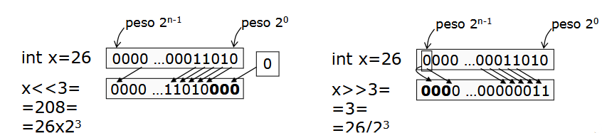
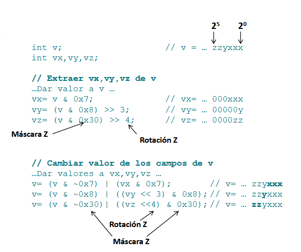
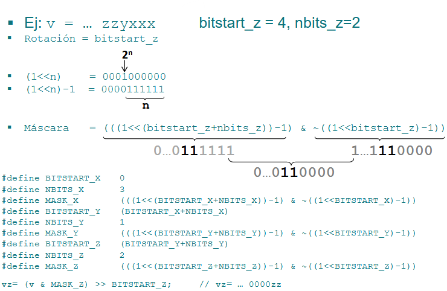

Operaciones con valores binarios
Introducción al computador y el lenguaje C
Ingeniería de Sistemas y Automática - Universidad de Oviedo
Operaciones con valores binarios
Recordatorio: un entero se codifica en el computador con valores binarios (codificación ponderada en base 2).
int x = 23;000...010111
8*sizeof(int).
En ciertas ocasiones, el programador puede tener interés en el valor particular de algún(os) bit(s), y no en el valor completo (la cantidad que representa):
- Cuando los bits representan el estado de valores binarios diferentes (ej. E/S digital).
- Cuando se desea comprimir informaciones de varios valores en un solo entero.
Operaciones con valores binarios
En los casos anteriores, el valor decimal y las operaciones aritméticas aportan poca información o es difícil de extraer.
valor = 77; // 26 + 23 + 22 + 20
| 27 | 26 | 25 | 24 | 23 | 22 | 21 | 20 |
|---|---|---|---|---|---|---|---|
| 0 | 1 | 0 | 0 | 1 | 1 | 0 | 1 |
- ¿Está activa la luz de peso 2?
- Quiero activar la luz de peso 4.
- Quiero cambiar el estado de las luces de peso 6 y 7 para generar una intermitencia.
Operadores lógicos de bit
Operadores de C para manejar bits (sólo valores enteros):
-
&(AND): entA & entB → entR
Da1solo si ambos bits son 1 (ideal para máscaras y aislar bits). -
|(OR): entA | entB → entR
Da1si al menos uno es 1 (ideal para activar bits específicos). -
^(XOR): entA ^ entB → entR
Da1si los bits son distintos (ideal para invertir o bascular estados).
~(NOT): ~entA → entR
Invierte cada bit del número sobre el que se aplica.
int v1 = 77; // 01001101
int v2 = 23; // 00010111
v1 & v2 -> 00000101 (= 5)
v1 | v2 -> 01011111 (= 95)
v1 ^ v2 -> 01011010 (= 90)
~v1 -> 10110010 (= -78)Operadores de desplazamiento de bits
<< (desplazamiento a izquierda): entA << entB → entR>> (desplazamiento a derecha): entA >> entB → entR0 si entA es unsigned, o con el bit de signo de entA si es signed (0: Positivo, 1: Negativo).

Operaciones con valores binarios (Hexadecimal)
Para indicar constantes de cuyo valor interesan los bits, se usa la codificación hexadecimal (base 16, dígitos 0..9, A..F).
Un código hexadecimal equivale a 4 dígitos binarios:
| 0h = 0000 | 1h = 0001 | 2h = 0010 | 3h = 0011 | 4h = 0100 | 5h = 0101 | 6h = 0110 | 7h = 0111 |
| 8h = 1000 | 9h = 1001 | Ah = 1010 | Bh = 1011 | Ch = 1100 | Dh = 1101 | Eh = 1110 | Fh = 1111 |
0x.
valor = 77; // 2⁶ + 2³ + 2² + 2⁰ (01001101)
valor = 0x4D; // 4h = 0100, Dh = 1101 (01001101)%x en printf() y scanf() (no usar 0x).
Operaciones con valores binarios
Operaciones habituales con el bit de peso p de la variable entera x (afectando sólo a ese bit):
int x, p;
int mascara;
// ...Dar valores a p y x...
mascara = 1 << p; // mascara = 0..001 00..000 (2^p)| ¿Está activo el bit de peso p de x? | if (x & mascara) |
| Poner a 1 el bit de peso p de x: | x = x | mascara; |
| Poner a 0 el bit de peso p de x: | x = x & ~mascara; |
| Cambiar el valor del bit de peso p de x: | x = x ^ mascara; |
Operaciones con valores binarios
Operaciones habituales con varios datos comprimidos en un entero:

Operaciones con valores binarios
Calcular máscara y rotación para un bit de comienzo y un nº de bits de un campo.

Ejercicios propuestos
- Realizar una función que escriba en pantalla una cadena de caracteres que indique el contenido binario de un valor.
- Realizar una función que pida por teclado una cadena de caracteres que contenga 0s y 1s, y devuelva el valor entero que codifica a dicho valor binario.
- Usando el simulador (utilizar función
Sleep(200)para temporizar): Realizar un programa que encienda las luces en función del estado de activación de los interruptores. - Realizar un programa que haga parpadear las luces cuyos interruptores están activos.
- Realizar un programa que permita visualizar una luz que va desplazándose de izquierda a derecha (de forma circular).
- Realizar un programa que hace parpadear las luces 0 a 3 en función del estado de sus interruptores, y que a la vez traslade una sola luz entre 4 y 7.